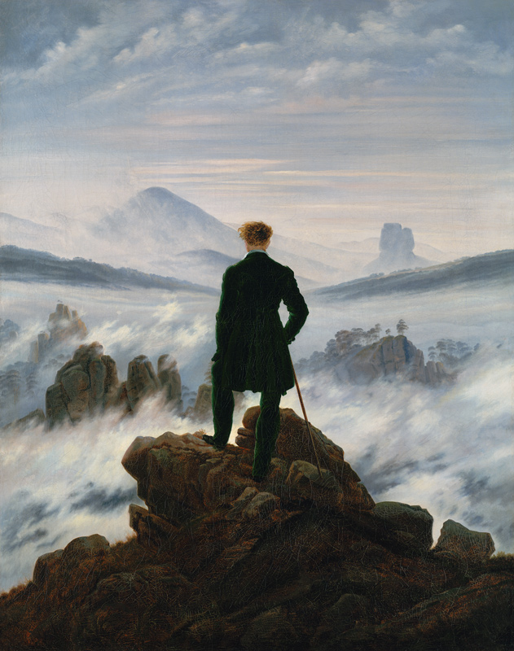
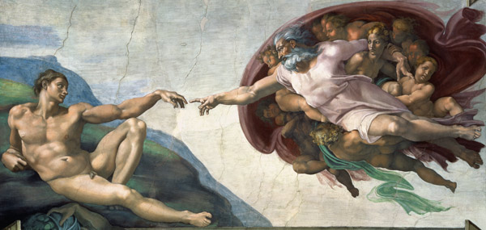
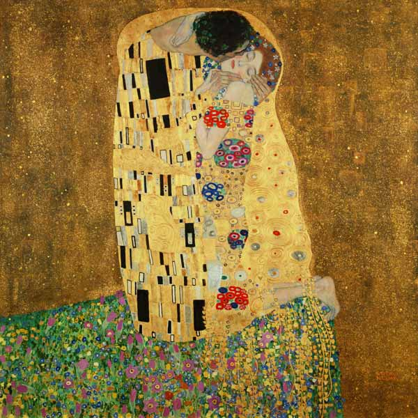
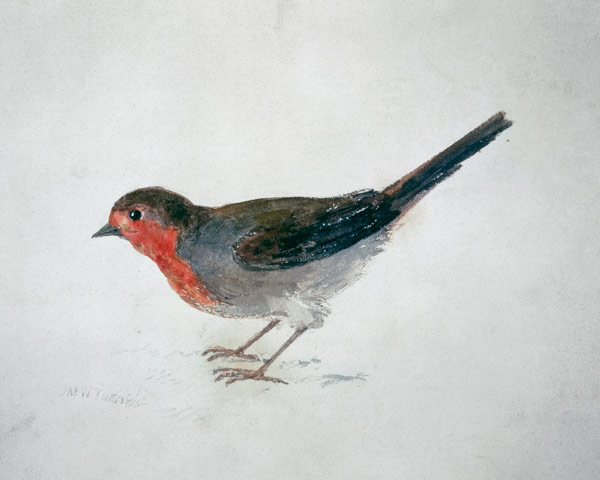
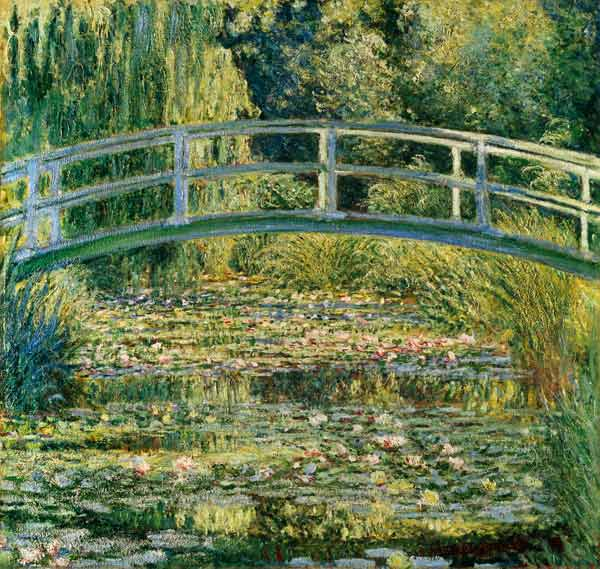
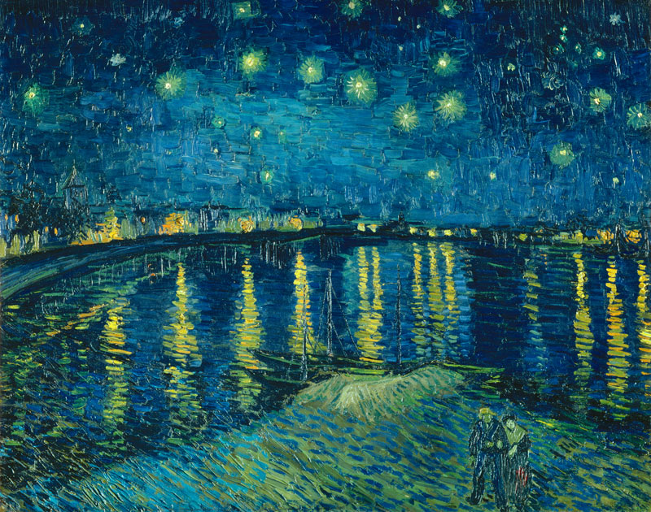
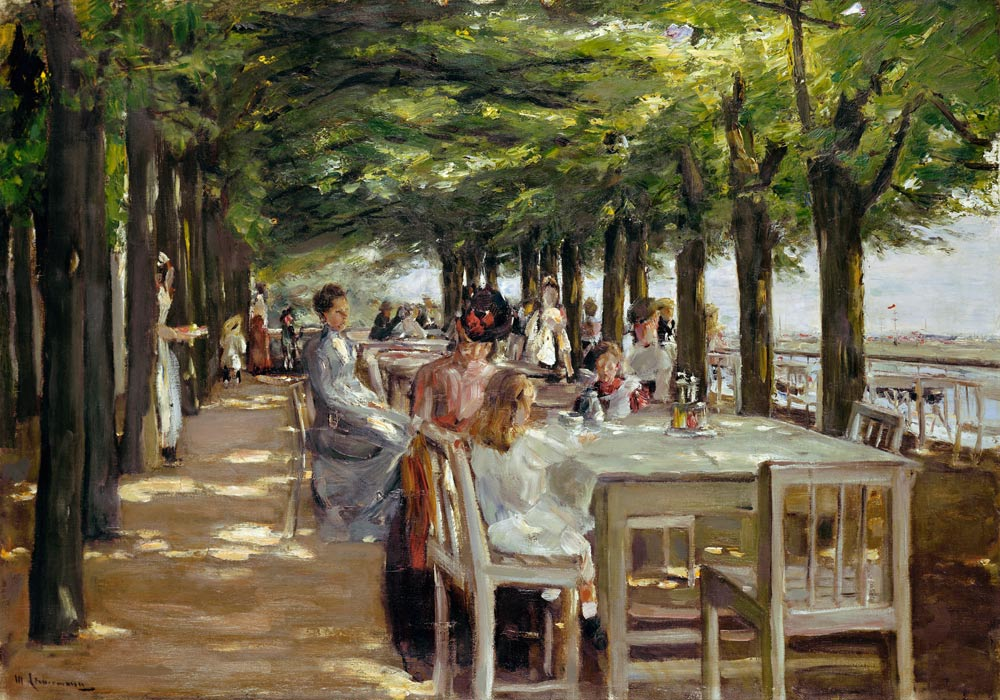

Amapolas en los alrededores de argenteuil
Amapolas en los alrededores de argenteuil

Impresion - Salida del sol

San Giorgio Maggiore al anochecer

La noche estrellada

Young at heart

Almendro en flor

Morero

Forget me not

Caminante sobre el mar de niebla

La creacion de Adan

El beso

Petirrojo

Estanque de Nenufares

La noche estrellada sobre el rodano

Restaurante Jacobo en Nienstedten cerca de Elbe

Terraza de cafe por la noche